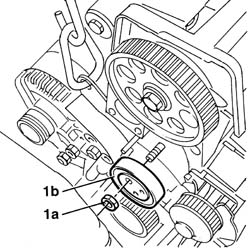
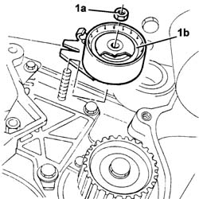
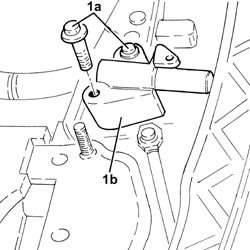
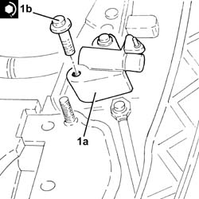
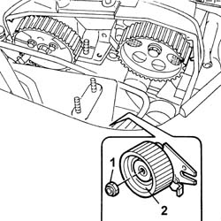
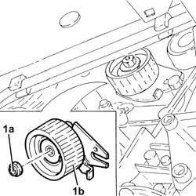
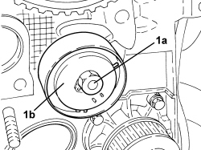

1032C10 MOVING timing TENSIONER - R.R. with timing belt/chain removed
- Path
- Procedures > 10 ENGINE > 1032 TIMING SYSTEM > 1032C timing system tensioners > 1032C10 MOVING timing TENSIONER - R.R. with timing belt/chain removed
- Kind
- repair procedure (removal / refitting; the operation number is the code)
- Applies to
- all engines; all production periods
- Interactive page
- https://sloeber94.github.io/elrnDB-fDbl/en/#/2584202
Applies to: engines: 1.2 8v; all production periods
 Removing
Removing
 Refitting
Refitting1. Undo the fixing nut (1a) and remove the moving tensioner (1b).

Applies to: engines: 1.2 8v; all production periods
Refitting
RemovingFit the moving tensioner and tighten the fixing bolt to torque.
Fastening | Component | dia | Value (daNm) | |
|---|---|---|---|---|
- | Bolt | MOBILE TIMING TENSIONER | M8 X 1.25 | 2.8 |
Applies to: engines: 1.6 16v; all production periods
Removing
Refitting1. Undo the nut (1a) and remove the mobile timing belt tensioner (1b).

Applies to: engines: 1.6 16v; all production periods
Refitting
RemovingPosition the moving timing system tensioner in its housing and secure it without tightening the nut.
Applies to: engines: 1.3 JTD 16V; all production periods
Removing
Refitting1. Undo the bolts (1a) and remove the mobile timing belt tensioner (1b).

Applies to: engines: 1.3 JTD 16V; all production periods
Refitting
RemovingUse a suitable tool (e.g. vice) to set the chain tensioner and hold it fully back with a retaining pin.
1. Position the fixed timing tensioner (1a) in its housing and secure it tightening the bolt (1b) to the recommended torque.
Fastening | Component | dia | Value (daNm) | |
|---|---|---|---|---|
1b | Bolt | MOBILE TIMING TENSIONER | M6 | (Cylinder head side) 0.8 - 1.0 |

Applies to: engines: 1.9 DIESEL; all production periods
Removing
Refitting1. Undo the nut.
2. Remove the timing belt moving tensioner.

Applies to: engines: 1.9 DIESEL; all production periods
Refitting
RemovingFit the timing belt moving tensioner.
Screw in the fixing nut without tightening it.
Applies to: engines: 1.9 JTD 8V; all production periods
Removing
Refitting1. Undo the bolt (1a) loosened previously completely and remove the mobile timing belt tensioner (1b).

Applies to: engines: 1.9 JTD 8V; all production periods
Refitting
RemovingPosition the moving timing system tensioner in its housing and secure it without tightening the nut.
Applies to: engines: 1.4 8v; all production periods
Removing
Refitting1. Undo the nut (1a) loosened previously and remove the mobile tensioner (1b).

Applies to: engines: 1.4 8v; all production periods
Refitting
Removing- Position the moving tensioner in its housing and secure it without tightening the nut.